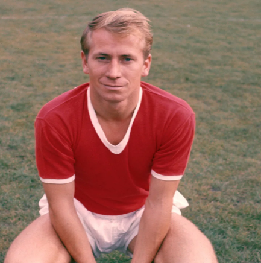
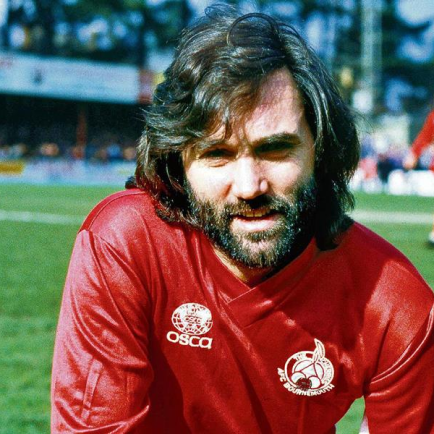
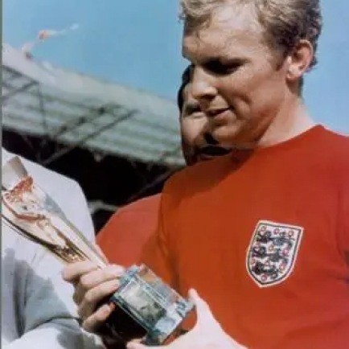

Seleção Inglesa
História e futebol são duas coisas que se misturam para os Ingleses. Foram eles que elaboraram o primeiro corpo de regras que deu forma ao futebol contemporâneo. Definido pela primeira vez em 1848, o chamado Cambridge Rules foi a base para o código de regras adotado pela Football Association em 1863, organização essa responsável por gerir as ligas de futebol inglesas e por convocar e administrar a seleção de futebol da Inglaterra. Foram necessários oito anos para que após a adoção das Cambridge Rules pela associação local o embrião da seleção nacional de futebol do país fosse formado. Em 1872, foi realizada aquela que é considerada a primeira partida entre seleções nacionais e que fundou as duas primeiras seleções de futebol da história.
Títulos
Ídolos
- 
- 
- 
-

-

Sir Bobby Charlton
Sir Bobby Charlton foi o maior artilheiro com um total de 49 gols para Inglaterra e 249 para Manchester United durante sua carreira. No entanto, o que faz dele diferente dos outros marcadores de gol nesta seleção, é que foi também um marcador de grandes gols. Ele nunca deixaria uma oportunidade passar, apesar de quão poucas as chances de marcar um gol poderiam ser. Ele é definitivamente o melhor meio-campista a já jogar para Inglaterra, se não para o mundo. Ele é uma das principais razões para a Inglaterra vencer a Copa do Mundo em 1966.
GEORGE BEST
George Best se aposentou prematuramente quando ele tinha apenas 28 anos, e ainda assim, ele é o segundo lugar nesta seleção. Ele ficou em oitavo na votação que elegia 100 maiores jogadores de futebol do mundo do século 20, e foi também votado em décimo sexto nas eleições da IFFHS para o Jogador do Século em 1999.
BOBBY MOORE
O homem que defendeu a Inglaterra contra a Alemanha nas finais da Copa do Mundo. Considerado por muitos como o melhor zagueiro de todos os tempos. Ele assumiu o papel de capitão para Inglaterra com apenas 22 anos de idade. Mas seu maior sucesso estava para surgir mais tarde, precisamente na conquista da Copa do Mundo de 1966, uma realização que a Inglaterra nunca foi capaz de repetir desde então
SIR STANLEY MATTHEWS
Sir Stanley Matthews é muitas vezes considerado como o melhor jogador inglês de todos os tempos, e por razões muito boas. Ele foi o primeiro jogador de futebol a vencer os prêmios Melhor Jogador Europeu do Ano e Melhor Jogador Inglês do Ano.
JOHN CHARLES
John Charles foi considerado como um dos melhores jogadores de futebol já produzidos pelo Reino Unido. Ele é muito conhecido por sua taxa de sucesso extraordinária de 93 gols em 155 partidas, enquanto estava jogando para a Juventus. Ele pode não ter sido o maior marcador da Inglaterra, mas chegou muito perto. Além disso, ele poderia bem jogar em qualquer função, graças a sua extraordinária resistência, técnica e habilidades.